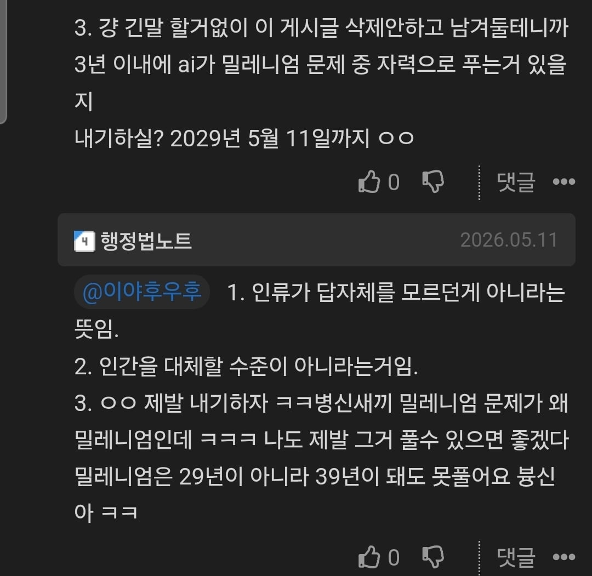

2029년 안에 ai가 밀레니엄 문제 풀지
저랑 내기하셨는데 제가 이겼네요
글이 오래돼서 답글이 추가로 안달리고 작성한글도 없으시길래 수소문 해봅니다
바나나우유라도 하나 사주시죠

2029년 안에 ai가 밀레니엄 문제 풀지
저랑 내기하셨는데 제가 이겼네요
글이 오래돼서 답글이 추가로 안달리고 작성한글도 없으시길래 수소문 해봅니다
바나나우유라도 하나 사주시죠
생체 활동 신호 없는거보면...
시간대 대충 보니 자러간 듯
써니쌤한테 미안하다케라
뭔가 AI한테 "ai가 밀레니엄 문제 풀었다는데 이게 솔직히 푼게 아닌게 맞지 않아?"
"댓글에서 ~라는데 이거 반박할 문장 만들어줘" 이러고 있을거같아서 소름돋네
Ai 한달치 구독료면 바나나우유 20개 쏘고 남겠다...
근데 뭐
"나비에 스톡스 방정식의 일반해를 칮아줘" 이렇게 질문해서 답이 나왔다고 하는 수준이 일반적으로 기대하는 AGI일 것이고
저건 실제로는 연구하면서 (많이 쓰긴 햇겠지만) 아이디어를 얻고 구체적으로 정리하고 하는 식으로 주고받고 했을게 뻔하니 약간 느낌이 다르긴 해
그리고 심지어 나비에 스톡스 푼것도 아님. 스무스한 외력이 있을때도 오일러 식의 특이점이 존재 가능한것을 보인것으로 유체 관련식은 맞으나 나비에스톡스 식과는 한~~~~참 거리가 있긴함
맨날 쳐 싸우는 놈 아녀 ㅋㅋㅋ 솔직히 빠나나우유로 유쾌하게 인정하고 자기 의견도 꺼내면 되는데 어지간히 병신이네
얼굴이 못생길수록 온라인에서 공격적이다.
라던데..
본인도 원하는 답 나올 때까지 구체적으로 지휘 할거잖음 어쨌든 이러나저러나 AI는 답을 내주는데
그게 자력이 아니면 뭐 안에 사람이 들어가서 일일이 계산해줘야 자력인건가
이건 아무리봐도 최소한의 상식적인 대응을 바라던 글쓴이가 졌다 ㅋㅋㅋ
닉언밴, 저격밴, 생각했는데
호감고닉이라 그런가 부멉도 몇 없고
앞페이지 가면 본인 등판해있으니 꼭 읽어들 보시게ㅋㅋㅋㅋㅋ
어떠한 맥락에서 나온 댓글인지 궁금한 개붕이들 ㄱㄱ
원문 링크: https://www.dogdrip.net/700946351
반응 맛도리네ㅋㅋㅋㅋ
근데뭐 말자체가 틀린건아닌듯 자력으로 라는 지점은 확실히 애매하긴하네 말투랑 평소행실때매 까이는거랑은 별개로
지금 자력으로 풀었다는건 뭐 애매하다고 쳐도,
ai 발전 속도보면, 그냥 ai가 풀엇다고 봐도 무방할듯.
본문 얘 말대로 39년이내에는 풀텐데, 지금 애매힌게 뭔 의미가 있음.
결국 푸는던 확정일텐데
행정법노트 쟤 공무원도 못 붙었을듯
아니 나도 기억하는 새끼네 ㅋㅋㅋ gpt에 물어보는것만도 못한 법 댓글 달고 있어서 안 배운 것도 아니고 잘못 배운거 같은데 왜 이름에 행정법 달고 있지 했었다
“닭모가지를 비틀어도 새벽은 온다“ 이 글 보니까 진짜 AGI의 시대가 시작됐구나 느낀다. 밤에 촛불팔아 생계를 꾸리던 나는 어떻게 살아야 하나
확실한건 그는 얼굴이 빨개져있다는 것입니다
댓1페이지에서 이새끼 다른계정으로 분탕치나? 생각했는데
본인 등판하니까 ㅋㅋ 농도가 다르네 ㅋㅋㅋㅋㅋ
존나 무서운게
한 명은 3년을 한 명은 13년을 불렀는데
정작 4개월 걸렸다는거임
되게 공격적이네...
근데 내가 보기엔 그냥 AI를 좀 써본사람이지
현업은아닌가보네..ㅋㅋ
사회생활을 되게 피곤하게 할 스타일이네..
부분적이든 뭐든 인정을했으면 그냥 깔끔하게 접고가면되는데
굳이 저렇게 공격적으로 나올 필요가있을까 싶네
나비에스토크스 방정식이 풀렸으면, CFD 배우려던 생각 접어야겠네.
곧 나비에 스토크스 방정식의 해를 알테니 CFD보다 더 정확한 열유체 시뮬레이션이 나올것같음
오픈ai가 말한대로면 CFD가 더 중요 해질거 같은데?
이걸 보니까 딱 씨맥 맥문철 생각나는데
이래서 서로의 승리조건이 뭔지 명확하게 정하고 시작하는거거든
저렇게 '풀 수 있다'의 정의를 명확히 안 정해놓고 '못 푼다'라고만 하는 식이면
무한히 말바꾸면서 영원히 싸움
그냥 시간낭비야...
계약서 제대로 안 쓰면 상대가 우길 빌미 주는 것과 같음
내기도 면허 만들어서 저런 개찐따 새끼는 못하게 막아야함 ㅅㅂ
저새끼 존나 자주 보이는 개드립 지박령 병신이잖아. 댓글들 쭉 읽어보면 가관임. 쟤랑 키배뜨는게 시간 낭비 제일 아깝게 하는거임.
ㅋㅋㅋㅋ 첫 페이지 댓글 봤는데 그냥 악에 받쳐서 난 틀리지 않았어 라고 주장하는 것 같음
알았으니까 바나나우유 내놓으라고 빨리